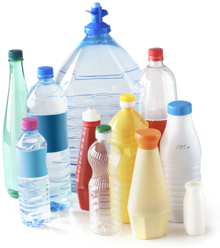
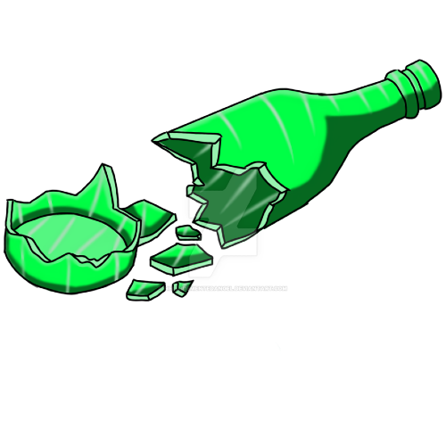
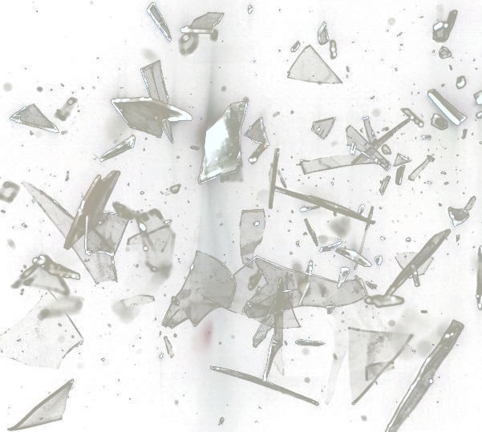

Contoh Sampah Anorganik
Kaleng

Plastik

Botol Kaca

Pecahan Kaca

Sampah organik merupakan jenis sampah yang berasal dari alam dan bisa membusuk.
organik ini dapat dimanfaatkan kembali menjadi pupuk yang menyuburkan tanaman.
Sampah anorganik merupakan jenis sampah yang tidak membusuk, dan sulit terurai di tanah.
Sampah anorganik juga bisa didaur ulang menjadi berbagai benda yang bisa digunakan kembali.
sampah beracun adalah jenis sampah yang berasal dari limbah pabrik atau rumah sakit.
Sampah beracun mengandung bahan kimia, sehingga jika dibuang sembarangan dapat meracuni ekosistem lingkungan.

#Multimedia Penanggulangan Sampah